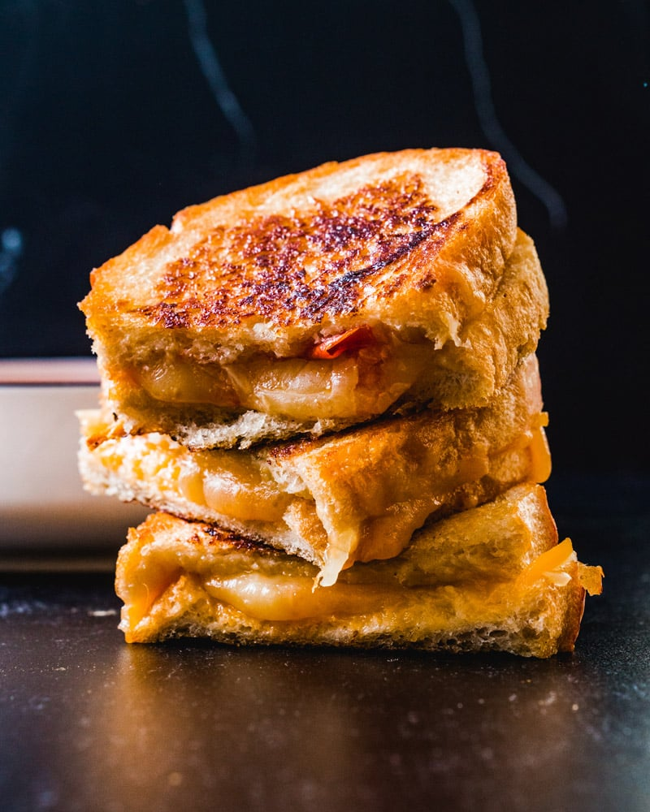

Grilled Cheese

Description
A delicious sandwich gooey cheese and white bread that complements a nice end to a long day.
Ingredients
- Bread of any kind
- Cheese of any kind
- Butter
- Grab two pieces of bread.
- Put your two slices of bread together and have a piece or more of cheese between them.
- Butter your bread and a pan.
- Put the pan over medium heat.
- Place your sandwich in the pan.
- Wait until desired cripsyness presents itself then flip and repeat for other side.
- Remove your sandwich wait for it to cool and have a delicious meal.